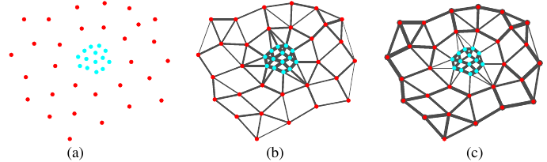
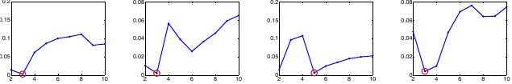

Built May 15, 2026
Zelnik-Manor and Perona’s Self-Tuning Spectral Clustering
(Zelnik-Manor and Perona
2004) is a short paper with an unusually durable idea: replace
the single bandwidth in a Gaussian affinity graph by a local bandwidth
estimated at each data point. The paper presents this as an automation
device for spectral clustering, but for a conductance and graph
Laplacian review its main value is more general. It supplies a
symmetric, adaptive edge-weight rule that changes the graph before any
eigenvector computation begins. Dense regions get small local scales,
sparse regions get large local scales, and cross-scale edges that would
be too strong under a global Gaussian can be suppressed. This review
treats that construction as the paper’s explicit contribution, then
separately draws out its implications for SIMODS and
gflow.
The paper addresses a familiar weakness of graph-based learning: the graph is often more consequential than the eigensolver applied to it. In standard spectral clustering, a distance \(d(s_i,s_j)\) between data points is converted to an affinity by a Gaussian kernel. With one global scale \(\sigma\), the weight between two distinct points is \[A_{ij} = \exp\left(-\frac{d^2(s_i,s_j)}{\sigma^2}\right), \qquad A_{ii}=0.\] This formula makes \(\sigma\) a single declaration of what counts as nearby. If the data have one density and one geometric scale, that can be reasonable. If one cluster is compact and another is diffuse, or if meaningful structure appears at several scales, no single value can represent the whole data set well.
Zelnik-Manor and Perona identify this as both a practical and conceptual problem. Their explicit goal is to reduce manual tuning in spectral clustering: they want the scale of analysis and the number of clusters to be estimated from the data rather than chosen by repeated trial. The part most relevant here is the first of those goals. The paper’s local-scale affinity has become a canonical example of an adaptive-bandwidth kernel for graphs. In conductance language, it says that the edge weight between two vertices should depend not only on their separation but also on the local sampling scales at both endpoints.
Spectral clustering begins by building a weighted graph on data points. Each vertex is a data point \(s_i\), and each edge weight records how strongly two points are connected. The paper calls these weights affinities. In a graph smoothing or electrical-network vocabulary, the same nonnegative off-diagonal weights can be read as conductances, with larger weights allowing more flow, diffusion, or smoothing between the corresponding vertices. The paper itself does not use this conductance interpretation, so throughout this review that translation is a synthesis for comparison with SIMODS rather than an explicit claim by the authors.
The algorithm reviewed and modified by the paper is the Ng-Jordan-Weiss spectral clustering procedure. Given an affinity matrix \(A\), form the degree matrix \[D_{ii}=\sum_{j=1}^n A_{ij}\] and the symmetric normalized affinity \[L = D^{-1/2} A D^{-1/2}.\] The leading eigenvectors of \(L\) define a low-dimensional coordinate system: each row of the eigenvector matrix is treated as an embedded version of the corresponding data point. More precisely, the Ng-Jordan-Weiss procedure first forms the leading eigenvector matrix \(X\), row-normalizes it to \[Y_{ij} = \frac{X_{ij}}{\left(\sum_j X_{ij}^2\right)^{1/2}},\] and then applies \(k\)-means to the rows of \(Y\). P01 keeps the normalized affinity and eigenspace construction, but later replaces this final row-clustering stage with an eigenvector-rotation and non-maximum assignment rule. A useful mental model is that good clusters make the graph nearly block diagonal. In the ideal case, the leading eigenspace separates by blocks, although repeated eigenvalues mean that the eigensolver may return an arbitrary rotation of the cluster indicator directions.
The open issue is that all of this depends on \(A\). If a global Gaussian bandwidth is too small, the graph fragments; if it is too large, separate structures merge. Figure 1 of the paper gives the motivating examples: global bandwidths that work for one synthetic data set fail for another, and even an apparently optimal global bandwidth can fail when several scales coexist.
The core construction is local scaling. Instead of one \(\sigma\), the paper assigns a local scale \(\sigma_i\) to each point \(s_i\). The distance from \(s_i\) to \(s_j\), as seen from \(s_i\), is \(d(s_i,s_j)/\sigma_i\), and the same pair as seen from \(s_j\) is \(d(s_j,s_i)/\sigma_j\). For a symmetric distance this leads to the product-scaled squared distance \[\frac{d(s_i,s_j)d(s_j,s_i)}{\sigma_i\sigma_j} = \frac{d^2(s_i,s_j)}{\sigma_i\sigma_j}.\] The proposed affinity is therefore \[\hat A_{ij} = \exp\left(-\frac{d^2(s_i,s_j)}{\sigma_i\sigma_j}\right), \qquad i\ne j, \qquad \hat A_{ii}=0.\] The local scale used in the experiments is the distance from \(s_i\) to its \(K\)th nearest neighbor, \[\sigma_i = d(s_i,s_K).\] All reported experiments use \(K=7\). The authors state that \(K\) is independent of scale and depends on embedding dimension, but they do not give an operational dimension-to-\(K\) recipe. They also note in the discussion that richer local statistics might produce better scale estimates.
After replacing \(A\) by \(\hat A\), the rest of the graph operator is the same symmetrically normalized affinity: \[D_{ii}=\sum_j \hat A_{ij}, \qquad L = D^{-1/2}\hat A D^{-1/2}.\] This is important for interpretation. The paper is not proposing a new Laplacian normalization, a random-walk diffusion limit, or a continuum consistency theorem. Its primary mathematical intervention is the adaptive kernel used to populate the graph weights.

For this review, the clean extraction is \[c_{ij} = \hat A_{ij} = \exp\left(-\frac{d^2(s_i,s_j)}{\sigma_i\sigma_j}\right)\] if one chooses to read the affinity as a graph conductance. This is a derived conductance interpretation, not terminology used in the paper. The explicit paper language is affinity, and the explicit operator is a normalized affinity matrix. A Laplacian-style operator could be written as \(I-L\), but that is not the object the authors foreground.
The product \(\sigma_i\sigma_j\) is the decisive design choice. It preserves a symmetric matrix while letting both endpoint neighborhoods influence the edge. A point in a dense region has a small local scale, so an edge incident to that point must be short relative to a small neighborhood to receive a large weight. A point in a sparse region has a larger scale, so distances within the sparse region are not automatically punished simply because the global data set also contains a dense cluster. In this sense the kernel partially equalizes sampling density at the graph-construction stage.
It is also important to separate local bandwidth selection from graph support selection. The paper estimates \(\sigma_i\) using nearest-neighbor distances, but the affinity formula itself is not a continuous \(k\)-nearest-neighbor support rule or a mutual-neighbor graph rule. Unless an implementation later sparsifies the matrix, P01 is best read as an adaptive weighting method on a dense affinity matrix. That distinction matters for SIMODS comparisons, where one may need to distinguish edge existence from edge conductance.
The second half of the paper asks how to estimate the number of clusters. The authors reject a simple eigenvalue-gap rule as unreliable. In the ideal block-diagonal case, each cluster block contributes its own spectrum, and the top eigenvalue \(1\) has multiplicity equal to the number of groups. In noisy or imperfectly separated data, however, the eigenvalues move away from one, and gaps depend on the internal geometry of individual clusters rather than only on the number of clusters. Figure 4 makes this point empirically: the first ten eigenvalues have different patterns across synthetic data sets.
The authors therefore turn from eigenvalues to eigenvectors. If \(L\) were strictly block diagonal, the relevant eigenvectors could be chosen so that each row has nonzero entries only in the coordinate associated with its cluster. Repeated eigenvalues obscure this structure because any orthogonal rotation of the leading eigenspace is also valid. The proposed remedy is to find a rotation \(R\) such that \[Z = X R\] has rows that align as closely as possible with coordinate axes. With \[M_i = \max_j Z_{ij},\] the paper prints the alignment objective \[J = \sum_{i=1}^n \sum_{j=1}^C \frac{Z_{ij}^2}{M_i^2}.\] The final group number is selected as the largest candidate with minimal alignment cost; in Figure 5, costs up to \(0.01\%\) apart are treated as the same value, and the largest such group number is selected. Points are assigned by the largest squared entry in their rotated row.
The audit flags a real ambiguity here. If the printed \(J\) is used literally, a perfectly one-sparse row contributes \(1\), not \(0\). Yet Figure 5 plots near-zero costs and labels them as the alignment cost of Eq. (3). The safest reading is that the figure shows a shifted or normalized excess cost, or that some implementation convention is omitted from the text. The ranking rule is clear enough for the paper’s argument, but the plotted scale should not be cited as the literal unnormalized objective without additional verification.

The experiments are persuasive for the intended synthetic-data claim: local scaling makes spectral clustering less brittle on multi-scale examples. Figure 3 shows many synthetic results in which the proposed method recovers intuitive clusters and estimates the group number automatically, though the paper reports one failure where a three-group case is predicted as two. Figure 6, the image-segmentation example, should be read more narrowly. It mainly supports the automation claim: comparable image results could be obtained without local scaling only by manually setting both the global bandwidth and the number of groups differently for different images.
The paper is deliberately heuristic. It does not prove that the local-scale kernel converges to a particular Laplace-Beltrami operator, does not analyze smoothing bias or variance, and does not discuss stationary distributions or diffusion times. For modern graph-learning work, this means P01 should be cited as a practical adaptive-bandwidth graph construction, not as a continuum-limit result.
The local scale estimate is also minimal. A \(K\)th-neighbor distance is easy to compute and scale-adaptive, but the paper gives no rule for choosing \(K\) beyond reporting that \(K=7\) worked in their experiments. The discussion explicitly leaves open better local statistics. A SIMODS implementation should therefore treat \(K\) as a modeling choice, not as a resolved constant.
Finally, the automatic cluster-number procedure is less central for SIMODS than the kernel. Its geometric intuition is valuable: good leading eigenvectors should become close to axis-aligned cluster indicators after an orthogonal rotation. But the printed cost and plotted cost require caution, and the method still requires a maximum possible group number before the search begins.
gflowThe following implications are synthesis, not explicit claims by Zelnik-Manor and Perona. For SIMODS, P01 is most useful as a comparator for edge weighting under heterogeneous sampling. If a graph has a meaningful length \(\ell_{ij}\) on candidate edges, a P01-style conductance could be \[c_{ij} = \exp\left(-\frac{\ell_{ij}^2}{\sigma_i\sigma_j}\right),\] with \(\sigma_i\) estimated from local neighbor lengths or local graph geometry. Such a comparator would ask whether adaptive local bandwidths improve robustness when the data contain dense and sparse regions at the same time.
This should remain distinct from current
fit.rdgraph.regression() semantics. The current
gflow smoother is an overlap-density or Riemannian-complex
construction, not merely a Gaussian kernel with a self-tuned bandwidth.
P01 therefore should not be used to reinterpret the existing smoother
after the fact. Its role is cleaner as a planned
length/kernel-conductance baseline: keep the current method intact, add
a local-scale Gaussian edge-weight comparator where distances or lengths
are well defined, and compare stability, boundary behavior, and
sensitivity to sampling heterogeneity.
P01 also gives a useful diagnostic question for graph design. Are weak edges weak because they cross a true structural boundary, or because a fixed global scale is unfair to a sparse region? The local-scale kernel is a compact way to test that distinction. If performance improves under P01-style weighting, the improvement would suggest that local sampling density, rather than only graph topology, is affecting the smoother or clustering result.
The reusable artifact is the symmetric local-scale edge weight \[\hat A_{ij} = \exp\left(-\frac{d^2(s_i,s_j)}{\sigma_i\sigma_j}\right), \qquad \sigma_i=d(s_i,s_K).\] For a review table, this paper should be classified as local-bandwidth Gaussian affinity weighting with symmetric normalized spectral clustering. It is not a cKNN support construction, not an inverse-length conductance rule, and not a proof of graph Laplacian convergence. Its strongest evidence is the Figure 2 demonstration that local scaling can reverse the mistaken ordering of cross-cluster and within-sparse-cluster affinities produced by a global bandwidth.
Primary source: the canonical P01 PDF in sources/pdf/,
read in full including figures and appendix. Archival scaffolding: the
P01 Markdown memo in and P01 audit in audits/. Figure
screenshots: internal-review captures listed in ; included paths are
relative to this review directory and use .